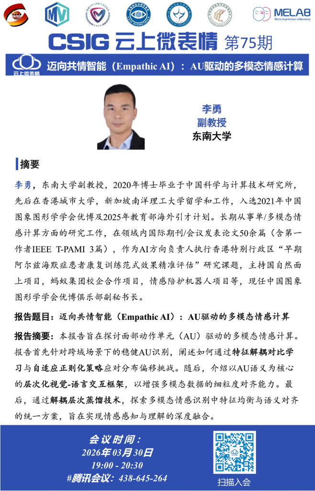

<?xml version="1.0" encoding="UTF-8"?><rss version="2.0"
	xmlns:content="http://purl.org/rss/1.0/modules/content/"
	xmlns:wfw="http://wellformedweb.org/CommentAPI/"
	xmlns:dc="http://purl.org/dc/elements/1.1/"
	xmlns:atom="http://www.w3.org/2005/Atom"
	xmlns:sy="http://purl.org/rss/1.0/modules/syndication/"
	xmlns:slash="http://purl.org/rss/1.0/modules/slash/"
	>

<channel>
	<title>未分类 &#8211; 多模态与情感智能研究组</title>
	<atom:link href="" rel="self" type="application/rss+xml" />
	<link>../../../index.html</link>
	<description>Affective Intelligence &#38; Multimodal Group</description>
	<lastBuildDate>Wed, 25 Mar 2026 09:40:32 +0000</lastBuildDate>
	<language>zh-Hans</language>
	<sy:updatePeriod>
	hourly	</sy:updatePeriod>
	<sy:updateFrequency>
	1	</sy:updateFrequency>
	<generator>https://wordpress.org/?v=6.9.4</generator>
	<item>
		<title>第75期CSIG云上微表情</title>
		<link>../../../di75qicsigyunshangweibiaoqing/index.html</link>
					<comments>../../../di75qicsigyunshangweibiaoqing/index.html#respond</comments>
		
		<dc:creator><![CDATA[lwk]]></dc:creator>
		<pubDate>Wed, 25 Mar 2026 08:16:29 +0000</pubDate>
				<category><![CDATA[未分类]]></category>
		<guid isPermaLink="false">../../../index.html?p=314</guid>

					<description><![CDATA[&#19968;&#12289;&#25253;&#21578;&#27010;&#35272; 题目： 迈向 [&#8230;]]]></description>
										<content:encoded><![CDATA[<h3 class="wp-block-heading" id="e4b880e68aa5e5918ae6a682e8a788">&#19968;&#12289;&#25253;&#21578;&#27010;&#35272;</h3>


<p><strong>题目：</strong> 迈向共情智能（Empathic AI）：AU驱动的多模态情感计算</p>


<p><strong>时间：</strong> 2026年3月30日 19:00 &#8211; 20:30</p>


<p><strong>地点：</strong> 腾讯会议：438-645-264</p>


<p><strong>主讲：</strong> 李勇</p>


<div style="height:30px" aria-hidden="true" class="wp-block-spacer"></div>


<h3 class="wp-block-heading" id="e4ba8ce69198e8a681">&#20108;&#12289;&#25688;&#35201;</h3>


<p>本报告旨在探讨面部动作单元（AU）驱动的多模态情感计算。报告首先针对跨域场景下的稳健AU识别，阐述如何通过特征解耦对比学习与自适应正则化策略应对分布偏移挑战。随后，介绍以AU语义为核心的层次化视觉-语言交互框架，以增强多模态数据的细粒度对齐能力。最后，通过解耦层次蒸馏技术，探索多模态情感识别中特征均衡与语义对齐的统一方案，旨在实现情感感知与理解的深度融合。</p>


<div style="height:30px" aria-hidden="true" class="wp-block-spacer"></div>


<figure data-wp-context="{&quot;imageId&quot;:&quot;69cbe35e4d45b&quot;}" data-wp-interactive="core/image" data-wp-key="69cbe35e4d45b" class="wp-block-image aligncenter size-large wp-lightbox-container"><button
			class="lightbox-trigger"
			type="button"
			aria-haspopup="dialog"
			aria-label="放大"
			data-wp-init="callbacks.initTriggerButton"
			data-wp-on--click="actions.showLightbox"
			data-wp-style--right="state.imageButtonRight"
			data-wp-style--top="state.imageButtonTop"
		>
			<svg xmlns="http://www.w3.org/2000/svg" width="12" height="12" fill="none" viewBox="0 0 12 12">
				<path fill="#fff" d="M2 0a2 2 0 0 0-2 2v2h1.5V2a.5.5 0 0 1 .5-.5h2V0H2Zm2 10.5H2a.5.5 0 0 1-.5-.5V8H0v2a2 2 0 0 0 2 2h2v-1.5ZM8 12v-1.5h2a.5.5 0 0 0 .5-.5V8H12v2a2 2 0 0 1-2 2H8Zm2-12a2 2 0 0 1 2 2v2h-1.5V2a.5.5 0 0 0-.5-.5H8V0h2Z" />
			</svg>
		</button></figure>
]]></content:encoded>
					
					<wfw:commentRss>../../../di75qicsigyunshangweibiaoqing/feed/index.html</wfw:commentRss>
			<slash:comments>0</slash:comments>
		
		
			</item>
		<item>
		<title>2026年中国多媒体大会（ChinaMM）论坛报告</title>
		<link>../../../2026nianzhongguoduomeitidahuichinammluntanbaogao/index.html</link>
					<comments>../../../2026nianzhongguoduomeitidahuichinammluntanbaogao/index.html#respond</comments>
		
		<dc:creator><![CDATA[lwk]]></dc:creator>
		<pubDate>Wed, 25 Mar 2026 07:22:07 +0000</pubDate>
				<category><![CDATA[未分类]]></category>
		<guid isPermaLink="false">../../../index.html?p=305</guid>

					<description><![CDATA[&#19968;&#12289;&#25253;&#21578;&#27010;&#35272; 题目： 共情 [&#8230;]]]></description>
										<content:encoded><![CDATA[<h3 class="wp-block-heading" id="e4b880e68aa5e5918ae6a682e8a788">&#19968;&#12289;&#25253;&#21578;&#27010;&#35272;</h3>


<p><strong>题目：</strong> <strong>共情智能：从面部原语到多模态协同</strong></p>


<p><strong>时间：</strong> 2026年7月30日 &#8211; 8月1日</p>


<p><strong>地点：</strong> 山西省太原市</p>


<p><strong>主讲：</strong> 李勇</p>


<div style="height:30px" aria-hidden="true" class="wp-block-spacer"></div>


<h3 class="wp-block-heading" id="e4ba8ce69198e8a681">&#20108;&#12289;&#25688;&#35201;</h3>


<p>共情智能（Empathic AI）是实现人工智能“情智兼备”的核心愿景，而提升模型在复杂场景下的细微情感理解能力仍是当前研究的重难点。本报告立足面部动作单元（AU）这一代表性情感原语，系统阐述AU驱动的多模态情感计算框架：首先，针对跨域分布偏移难题，提出双重对比学习解耦与自适应Dropout机制，并结合渐进式视言交互及语义原型概率建模，实现跨域及身份无关的稳健AU检测；进一步构建解耦式多模态蒸馏、非完备模态扩散生成及层次化解耦蒸馏框架实现多模态情感语义的统一建模与协同增强。本报告尝试构建“原子语义驱动—跨模态关联对齐—多模态统一表征”的技术范式，旨在深度融合情感感知与理解，为迈向具备高可靠情感交互能力的共情智能提供范式参考与实践支撑。</p>


<div style="height:30px" aria-hidden="true" class="wp-block-spacer"></div>


<div style="height:30px" aria-hidden="true" class="wp-block-spacer"></div>
]]></content:encoded>
					
					<wfw:commentRss>../../../2026nianzhongguoduomeitidahuichinammluntanbaogao/feed/index.html</wfw:commentRss>
			<slash:comments>0</slash:comments>
		
		
			</item>
	</channel>
</rss>
